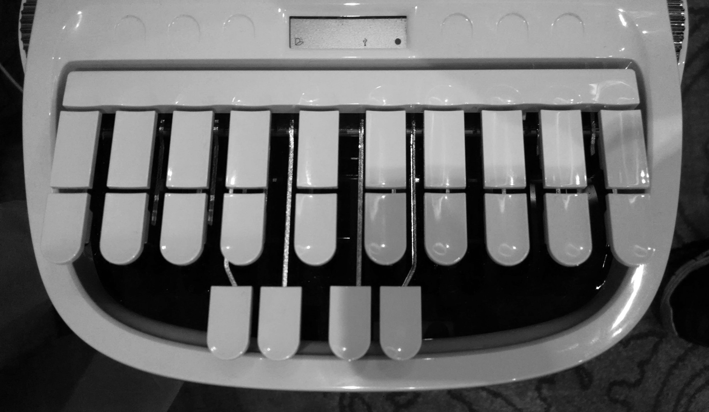
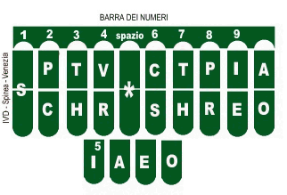
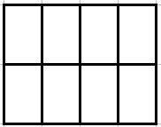
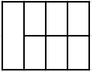
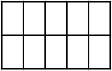
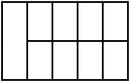

International
InternationalStenotypia - czyli szybkie klepanko - trochę rozważań
2011-08-22 | autor: flamenco108W poprzednim wpisie zadałem doniosłe pytanie: “Stenotypia - ale jaka?”. Dziś, z perspektywy miesiąca, czyli czasu (krótkiego, ale jednak) muszę nieskromnie przyznać, że było to znakomicie postawione pytanie.
Na końcu tamtegoż wpisu ukonkretyzowałem to przedwstępnie do problemu, czy istniejące już urządzenia odpowiadać będą specyfice polskiej stenografii? Dziś, po pewnej liczbie testów, wiem, że - niestety nie. Konkretnie, z żalem prawdziwym, muszę to powiedzieć o maszynach amerykańskich, tj. o amerykańskim układzie klawiatury. A czemuż to, zapytacie? A temuż, że na przeszkodzie stoi matematyka, konkretnie kombinatoryka. Amerykański układ klawiatury, zwany onegdaj (a nawet nieco wcześniej) Stenotype, składa się z trzech sekcji:

LEWA - inicjalna, jak mówią Amerykanie, fachowo trzeba by ją nazwać nagłosową, bo odpowiada za spółgłoski inicjujące sylabę i wyraz. Składa się z ośmiu klawiszy w dwóch rzędach po cztery.
ŚRODKOWA - znajdująca się niżej i obsługiwana przez kciuki, składająca się z czterech klawiszy sekcja odpowiadająca za samogłoski, czy też śródgłos sylaby. Czyli sekcja śródgłosowa.
PRAWA - finalna, jak mówią Amerykanie, fachowo nazwać wypada ją wygłosową, bo odpowiada za spółgłoski finalizujące sylabę i wyraz. Składa się z dziesięciu klawiszy w dwóch rzędach po pięć.

W wersji włoskiej (czy też romańskiej, bo ten sam układ używany jest też do hiszpańskiego, portugalski ma własną mapę klawiatury) układ ten uległ pewnej komplikacji, tj. w sekcji wygłosowej części klawiszy (sztuk 4, słownie: cztery) nadano wartość samogłosek. Przyczyny powinny być oczywiste: więcej otwartych sylab, więcej wyrazów wielosylabowych, więcej form gramatycznych każe stenografom poszukiwać możliwości wyklepania większej liczby sylab za jednym akordem, czyli jednoczesnym, pojedynczym naciśnięciem sekwencji klawiszy. W końcu to stenografia, a nie szkółka niedzielna.

Jednakowoż, albowiem, ponieważ, sądzę, że do języka polskiego amerykański układ klawiatury nie będzie pasował. A dlaczego? Jak rzekłem, kombinatoryka. Na razie w badaniach zatrzymałem się na nagłosowej części sylaby polskiej i o nagłosowej części klawiatury zamiaruję tu mówić. Dzięki skryptom No-qanka i swoim wyszło mi, że grup spółgłoskowych, bez rozdzielania na etymologicznie sensowne składniki, a po prostu zlepków spółgłosek jest w języku polskim około 400. Około - bowiem język jest wciąż żywy i wciąż adaptuje i tworzy nowe słowa i formy. Co kilka lat temu było wyrazem obcym, dziś jest tylko obcobrzmiącym, podlega odmianie i zostało dołączone do narodowego dziedzictwa. Grupy spółgłoskowe nagłosowe to wszelkiego rodzaju kombinacje, od prostych, jak K (kat), T (tok), B (bat), W (wał), przez trudniejsze KR (krata), TR (trup), BR (brak) WR (wrak), WZ (wzajem), KRZ (krzyż), TRZ (trzeci), BRZ (brzeg), po zupełnie trudne KRZT/KSZT (krztusić się, kształcić), WZN (wznosić), WZR (wzrok), PRZT (prztyczek), PSTR (pstro), WSTRZ (wstrzyknąć, wstrzymać).
Ile klawiszy liczy amerykańska sekcja nagłosowa (patrz wyżej)? 8 (słownie: osiem) w dwóch rzędach po 4. W rzeczywistości jest ich zaledwie 7 (słownie: siedem), bo skrajne S składa się z dwóch klawiszy, zamiast jednego - tylko w celach estetycznych. Odwołajmy się zatem do kombinatoryki i zadajmy pytanie, ile kombinacji-akordów z od jednego do czterech palców można wybić na tym układzie, zakładając, że można naciskać też po dwa klawisze równocześnie?
Jeżeli te wyliczenia są błędne, proszę, niech mnie ktoś poprawi.
Dla 8 klawiszy i 4 palców:

(8!)/(1!*(8-1)!)+(8!)/(2!*(8-2)!)+(8!)/(3!*(8-3)!)+(8!)/(4!*(8-4)!)+(8!)/(5!*(8-5)!)+(8!)/(6!*(8-6)!)+(8!)/(7!*(8-7)!)+(8!)/(8!*(8-8)!) = 255
Jako się rzekło, w rzeczywistości jest to 7 klawiszy i 4 palce:

(7!)/(1!*(7-1)!)+(7!)/(2!*(7-2)!)+(7!)/(3!*(7-3)!)+(7!)/(4!*(7-4)!)+(7!)/(5!*(7-5)!)+(7!)/(6!*(7-6)!)+(7!)/(7!*(7-7)!)+(7!)/(7!*(7-7)!) = 128
Prawie dwukrotnie mniej. Ale zaledwie trzykrotnie więcej, niż wynosi liczba głosek w języku polskim. W ogólności.
Czyli jeszcze mniej. A, jak powiedziałem wyżej, potrzebujemy co najmniej 400 kombinacji.
Zatem spróbujmy z 10 klawiszami po 5 rzędzie, zakładając, że na raz będziemy naciskać najwyżej 8 klawiszy:

(10!)/(1!*(10-1)!)+(10!)/(2!*(10-2)!)+(10!)/(3!*(10-3)!)+(10!)/(4!*(10-4)!)+(10!)/(5!*(10-5)!)+(10!)/(6!*(10-6)!)+(10!)/(7!*(10-7)!)+(10!)/(8!*(10-8)!) = 1 012
Tu mamy jakiś zapas. Jeżeli założymy, że poniżamy mały paluszek i używamy go jak najrzadziej, to kombinacji w zapasie i tak pozostaje 847. A jeżeli uznamy, że mały paluszek jest niepełnosprawny i nie odróżni dwóch klawiszy, i przydzielimy mu pojedynczy (ergo będziemy mieć 9 klawiszy, jak po lewej stronie w klawiaturze amerykańskiej), dalej mamy do dyspozycji aż 510 kombinacji!

Powiecie (nie powiecie, to taki chwyt retoryczny), że można w stenografii redukować grupy spółgłoskowe do ich wspólnej reprezentacji, jeżeli nie powoduje to problemu z odczytem (w tym wypadku np. komputer nie powinien mieć takich wątpliwości, na przykład przy pomocy rozbudowanego słownika, w którym konfliktowe wyrazy zostałyby zapisane w całości). Mam tu na myśli np.
MR i MRZ/MŻ: mrówka, mżawka, mruk, umrzyk, mrągowo, mrozy, mrzeżyno etc.
Konflikt raczej się nie pojawi. Ale popatrzmy wyżej. Jeżeli komplet grup spółgłoskowych nagłosowych wynosi np. 400, to trzeba by dla połowy z nich znaleźć niekonfliktujące pary (trójkąty lub czworokąty też mogą być) - bardzo wątpię, żeby się to udało. Co prawda wiele z tych nagłosów występuje bardzo rzadko, np.
MDL - mdli, MGL - mgliście, MGŁ - mgła, MKN - mknie.
Tych bardziej rozbudowanych jest ponad setka, czyli całkiem sporo, ale dla porządku w umyśle trzeba przecież znaleźć dla nich pary zgodnie z jakąś regułą, a nie po prostu na pamięć. Mam wątpliwości, czy redukcja w takiej skali nie sprawiłaby, że ostatecznie CAT (computer aided transcription) nie sprowadziłoby się do prostego dopasowywania wszystkich wklepanych akordów do wyrazów w słowniku. Oznaczałoby to znowuż konieczność wygenerowania słownika na kilkaset tysięcy, o ile nie kilka milionów słów.
Weźmy jako przykład takie oto grupy:
WZ → WZG → WZGL
WZ = wzajem, wzór (ergo: wzur), wzejście, wzorem itp.
WZG = wzgarda, wzgórza itp.
WZGL = wzgląd, względnie itp.
Wydaje się, że WZGL obsługuje tylko słowo wzgląd i pochodne od niego. Zredukujmy zatem WZGL do WZG:
WZ = wzajem, wzór (ergo: wzur), wzejście, wzorem itp.
WZG = wzgarda, wzgórza itp. oraz wzgąd, wzgędnie…
Nie ma pomyłki. Pójdźmy dalej i zredukujmy WZG do WZ:
WZ = wzajem, wzór (ergo: wzur), wzejście, wzorem itp. oraz wzarda, wzórza, oraz wząd, wzędnie…
Dało radę? Dało. Benedyktyńska robota, automagiem tego się nie załatwi inaczej, jak w drodze eksperymentu. Warto zbadać ten odcinek, a nuż, widelec…
O wiele łatwiej jednak, i dla piszącego, i dla komputera, jeżeli powstaną jasne w użyciu akordy dla grup spółgłoskowych i samogłosek, które w toku pisania będzie można sklejać w sylaby i stopniowo robić to coraz prędzej. Znaczy, tak mi się wydaje.
Znaczy, wydaje mi się, że lepiej, kiedy piszący będzie myślał, jak przy odręcznych systemach stenograficznych, czyli, kiedy zechce napisać strzykwa, jego umysł dokona translacji tego rodzaju:
strzykwa → strzyk / fa → [i rozbija na ręce] LEWA: strz KCIUKI: y PRAWA: k [unieść ręce i znowu] LEWA: f KCIUKI: a
I już.
Ale to stenografia, nie szkółka niedzielna, nie teatr i nie boisko. A zatem trzeba będzie zbadać możliwość redukcji grup spółgłoskowych i ewentualne utworzenie odpowiedniego słownika. Ot co.
2011-08-22 autor: flamenco108